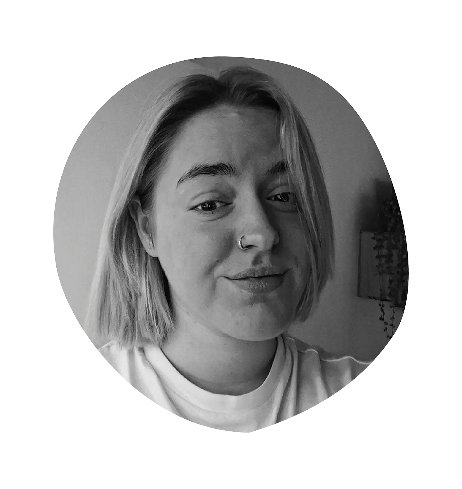

Over mij
Hallo,
mijn naam is Noortje Moelans, en ik ben een 21-jarige met een ongeloofelijke passie voor creativiteit. Mijn liefde voor het creëren strekt zich uit van tastbare projecten voor vrienden en familie tot het verkennen van digitale mogelijkheden met behulp van AI en PhotoshopWat mij kenmerkt, is mijn leergierigheid en inzet, die ervoor zorgen dat ik taken met succes volbreng, of ik nu zelfstandig werk of samenwerk in een team. Ik ben iemand die niet terugdeinst voor uitdagingen en er met een vleugje humor doorheen navigeert.
Hoewel ik geen specifieke ambitie heb om een leidende rol op me te nemen, vind ik het altijd fijn om anderen te ondersteunen bij hun taken. Mijn doel is om een boeiende carrière te vinden waarin ik de creatieve mogelijkheden van de IT-wereld volledig kan verkennen. Ik geloof in het samensmelten van technologie en creativiteit om innovatieve oplossingen te vinden en een waardevolle bijdrage te leveren aan mijn vakgebied.

Soft skills
78%
- Teamwork/zelfstandig
- leergierig
- kristisch
- oplossend denkend
Hard skills
70%
- Photoshop
- Figma
- Illustrator
- Indesign